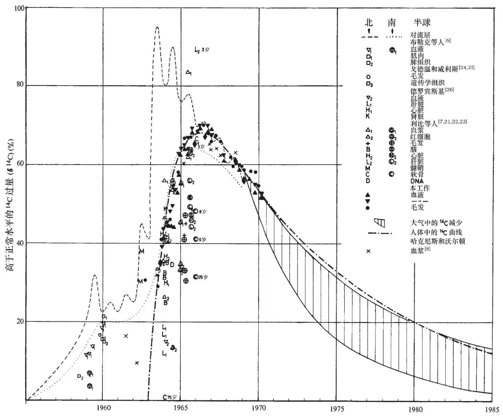
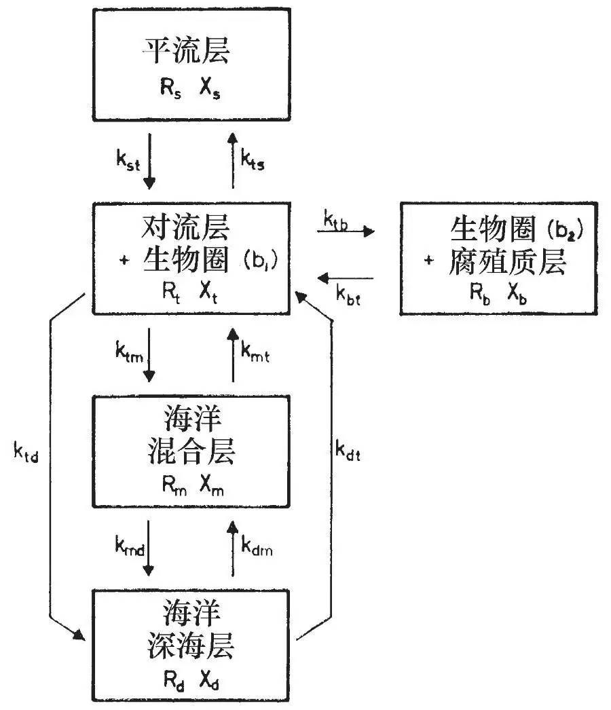
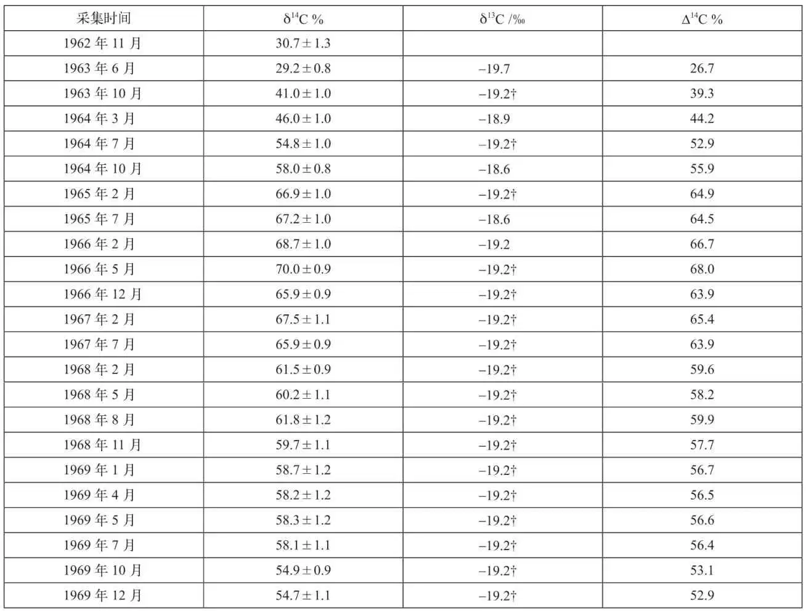
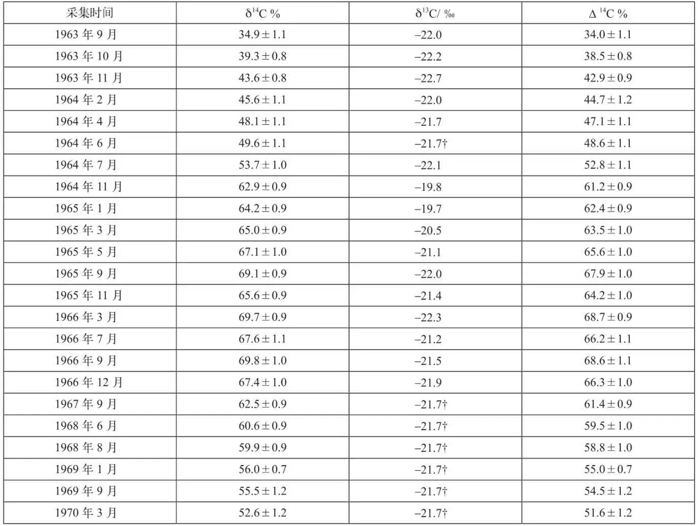
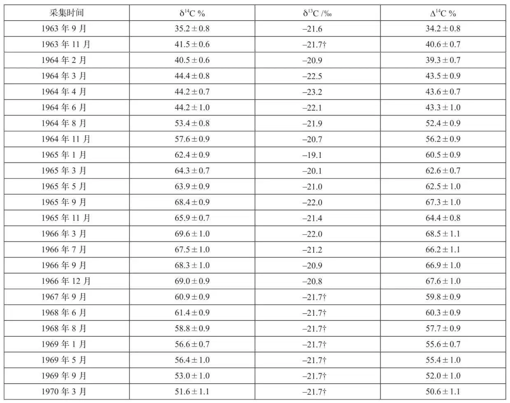
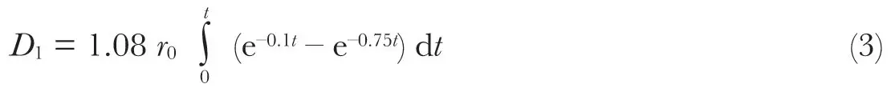
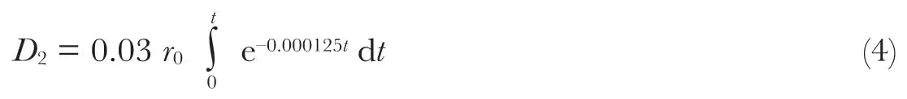

英文
英文尼达尔等
编者按
了解碳在大气、海洋和生物圈中的循环（主要归因于生物体在光合作用中对CO2的吸收）对于预测人类活动所产生的温室气体将怎样影响气候相当重要。这篇由挪威技术研究所的科学家们所撰写的文章使我们了解到，在20世纪70年代早期人们是如何开始注意到碳循环的。本文反映了那个年代的焦点问题：由核武器试验释放到大气中的放射性同位素碳–14（14C）在人体中的含量将会增加，这在当时被认为是一种潜在的健康威胁。显然，14C含量的增加是非常短暂的，因为核弹产生的14C很快就会被矿物燃料燃烧释放的CO2所稀释，现在人们认为后者才是人类将要面临的更大威胁。 英文
大气中14C主要以14CO2的形式存在，通常由宇宙射线中子和大气中的氮原子通过核反应而产生。14C在产生和衰变之间的自然平衡决定了人类所受到的一部分天然本底辐射的大小。由于核试验的原因，从1955年起，大气层、陆地生物圈和海洋中的14C开始逐步增加。虽然起初人们并不认为14C会对人类造成重大危害[1]，但后来有人指出[2-4]：由于14C的半衰期很长（5,700年），因而它对人类基因造成一定程度危害的可能性还是存在的。 英文
在本实验室中，我们研究了人体内的14C浓度[5]。经过6年时间的测试，我们已证实大气中的14C与人体中的14C是相互关联的，它们之间的媒介是光合作用[6-8]。 英文
自1955年起到现在，从核试验中释放出来的全部核能的2/3左右来自于1961年和1962年人们在北纬高纬度地区大气层中所进行的试验（参考文献9）。有不少人对14C接下来向对流层、生物圈和海洋中的转移进行了详细的报道[10-16]。北半球对流层中14C的过量值[16]（δ14C）主要针对从北纬30°到北纬90°之间的区域（图1），而南半球对流层曲线所代表的区域则是从赤道到南纬90°之间。 英文

图1．在对流层和人体中的放射性碳 英文
CO2在不同碳库之间的交换模型如图2所示。从图中可以看出，对流层中的CO2会与平流层、陆地生物圈和海洋之中的CO2发生交换。就CO2在对流层和生物圈之间的交换而言，我们赞同明尼希的观点，即认为生物圈可以被分为两个部分（讨论过程见参考文献17）。第一部分（b1）由树叶、草、树枝等组成，这部分与对流层之间发生着快速的交换并且与之结合；但相当多的植物属于第二部分（b2），这部分与对流层之间的交换速率很慢并且是和腐殖质层结合在一起的。 英文

图2．可进行交换的碳库，其中：Rt为总碳量；Xt为14C过量；kij为交换系数；i、j代表t、b、m、d (i≠j)。 英文
海洋被分成两个碳库，分别是混合层和深海层。CO2在对流层和海洋之间的交换主要发生在混合层，但根据克雷格的说法[18]，直接交换也可能会发生在对流层和深海层之间。目前在海洋混合层中的14C浓度要高出正常值10%~15%[19,20]。 英文
在之前发表的一篇文章中[20]，我们利用图2的模型讨论了对流层中δ14C的下降。我们认为，对流层中δ14C（xt）测量值的变化可大致由以下这个包含两项指数函数的式子来模拟：
xt = A1e–k1t + A2e–k2t
（1）
其中，参数A1、A2、k1和k2由不同的交换系数决定。因为其中有一些系数误差很大，所以外推结果有一定的变化范围，在图1中用阴影部分表示。 英文
核弹在大气中产生的14C已使自然界中14C的天然总含量增加了约3%。根据哈克尼斯等人的说法[8]：到本世纪末，由矿物燃料产生的CO2将使大气中的天然14C浓度下降到比正常值低大约16%的水平。因此，我们可以合理地推出，非放射性碳的稀释作用完全可以补偿由核弹引起的14C过量（苏斯效应）。 英文
14C向人体内的迁移过程取决于以下三个因素：（1）从植物性食物进行光合作用到它被人类食用之间的时间；（2）饮食结构，尤其是植物性食物所占的比重；（3）碳在人体组织各组成成分中的滞留时间。 英文
布勒克等人[6]（图1）发现：要使血液和肺组织中的14C浓度达到大气中的浓度分别需要1年和1.8年的时间。他们还发现，从进食到血液中出现δ14C之间的最大时间滞后可达6个月。 英文
伯杰及其合作者[7,21-23]（图1）重点研究了人体组织各组成成分的新陈代谢周转时间。他们为此选用的样本均来自于那些有过从南半球到北半球旅行经历的人。他们获得的一项研究成果显示：14C与这些人的脑蛋白以及脂类、肝、心、血浆蛋白和红细胞蛋白的结合情况非常接近于数月前大气中的14C含量，可以认为它能够反映数月前大气中的14C含量。他们发现老年人软骨组织中的胶原蛋白具有新陈代谢惰性。图1中还显示出了一些由其他研究者（参考文献8及24~26）得到的人体中的14C浓度值。 英文
在我们的实验室，对14C进入人体的研究是通过跟踪3个人血液和毛发中δ14C随时间的变化来进行的[5,27]（表1~表3）。因为没有对血液中的血浆和红细胞进行分离，所以测得的14C放射性是整个血样的平均值。从图1中可以看出，由血样得到的数据和由毛发样本得到的数据吻合得非常好。哈克尼斯和沃尔顿测得的血浆中的14C浓度数据[8]略微低于我们测得的值。 英文
表1. 颈部毛发中的碳，来自于一个1962年出生的男孩（K.N.）

†未测量（平均值）。 英文
表2. 血样中的碳，来自于一位在1963年时年龄为26岁的妇女（I.N.）

†未测量（平均值）。 英文
表3. 血样中的碳，来自于一位在1963年时年龄为26岁的妇女（A.L.）

†未测量（平均值）。 英文
来自血液和毛发的数据基本上代表了生活在北半球的所有人。因为南半球对流层的δ14C值比北半球对流层滞后大约1年，所以居住在两个半球的人体内的δ14C值也应该存在类似的滞后。大致到1970年之后，14C在南北半球的人体内的浓度将会趋于持平，并等于对流层中的14C浓度。从图1中可以看出：人体内部的δ14C（xH）值就像一个落后于大气中δ14C值的脉冲。用以下这个包含两项指数函数的式子可以很好地拟合xH的观测值：
xH = 108 (e–0.1t – e–0.75t)
（2）
函数式中的系数是通过最小均方法得到的，用到了在1963年~1970年间测得的人体中14C的上限值，以及将对流层的数据外推到1970年~2000年时的数据。选择上限值是因为还应当考虑到1963年以前的一些14C过量。在最近两年内得到的血液和毛发数据趋向于与图1阴影部分的上限值相符。化简式（2）的依据是以下两个假设：假设之前所有的核试验都集中发生在一个很短的时间间隔内，并且假设人体中14C含量开始增加的时间大约在1963年1月。 英文
式（2）括号内的第一项表明，人体内过量14C的平均寿命大约为10年；第二项表明，14C从在大气中产生到进入人体之间会有平均1.4年左右的时间滞后。滞后值的精确度大约可以达到30%以内，并与以前文献中的估计值相符[6,7]。 英文
人造放射性碳对人类造成的危害主要来源于人体内的辐射量。天然14C的剂量率r0是一个固定值，由它的衰变速率——每克碳每分钟衰变约14次——决定。r0的平均值大致是1.06毫拉德/年[9]。天然14C的剂量是这样分布的：在骨骼中为1.64毫拉德/年，在骨骼表层细胞中为1.15毫拉德/年，在骨髓和软组织中为0.71毫拉德/年。根据函数式（2），人体在t时间内吸收的剂量D1可由下式计算：

在大约30年内，来自该辐射源的总辐射剂量将为9r0。因此我们的骨骼所接受的辐射剂量为16毫拉德，骨骼表层细胞为11毫拉德，骨髓和软组织为7毫拉德。7毫拉德的剂量会对基因造成危害。这一剂量大致等于生殖腺从所有放射性尘埃中所吸收的总剂量的10%。但珀德姆[4]指出：实际上生殖腺所接收到的辐射剂量还要更大一些，因为DNA分子会发生嬗变，在嬗变过程中产生衰变的14C原子被替换成了N原子。珀德姆认为该嬗变过程对生物造成的伤害就相当于β辐射对生物的伤害。 英文
到大约公元2000年时，人体中的人造14C量将占到14C总量的3%左右。这种同位素的半衰期为5,700年，因而有几位科学家[2,3,9,28]认为它将对人类基因造成严重的威胁。长期的辐射剂量可由下式计算：

在未来的10,000年里，由骨骼细胞、骨骼表层细胞以及骨髓和软组织所吸收的总辐射剂量（D1+D2）分别为410、290和180毫拉德。这些剂量与一份联合国报告[9]（第45页）中给出的值一致，它们比所有其他的放射性尘埃都更重要。然而，我们对长期辐射剂量（D2）有所怀疑，因为正如我们之前曾经提到的，矿物燃料的使用可能会导致人体中的14C浓度降低至正常水平以下。我们认为：在大约30年内，由以前有足够规模的核试验所造成的14C危害对总遗传剂量（D）的贡献只有10毫拉德数量级。而从天然源中吸收的剂量约为100毫拉德/年，可见，与天然源相比，人工源的剂量是不值一提的。 英文
感谢挪威自然和人文科学研究理事会为我们提供了经费上的支持。 英文
（邓铭瑞 翻译；刘京国 审稿）